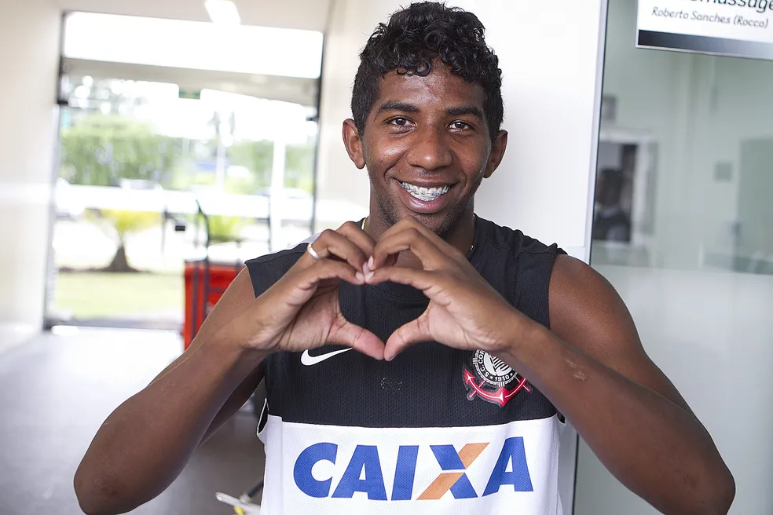

Rodinei Marcelo de Almeida é um futebolista brasileiro que atua como lateral-direito.
Atualmente joga no Olympiacos, da Grécia. Recebeu o Troféu Mesa Redonda em 2018 e em 2022, como o melhor lateral-direito a atuar no futebol brasileiro naqueles anos.
